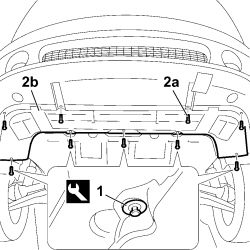
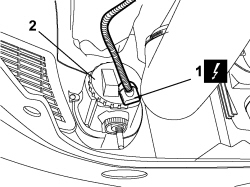
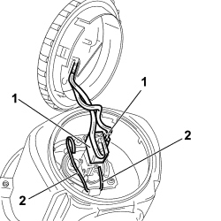

5540D14 L/H OR R/H FOG LIGHT BULB (ONE) - R+R
- Path
- Procedures > 55 ELECTRICAL EQUIPMENT > 5540 EXTERIOR LIGHTING > 5540D FOG LIGHTS > 5540D14 L/H OR R/H FOG LIGHT BULB (ONE) - R+R
- Kind
- repair procedure (removal / refitting; the operation number is the code)
- Applies to
- all engines; all production periods
- Interactive page
- https://sloeber94.github.io/elrnDB-fCrm/en/#/194000757
Applies to: all engines; all production periods
 Removing
Removing
 Refitting
Refitting- Turn the ignition key to the OFF position.
- Disconnect the negative battery terminal.
Description | Connector | |
|---|---|---|
BATTERY |
1. Using the special tool, release the four retaining buttons for the front part of the protection under the engine from the bodyshell.
Tool | Description | Function | Validity |
|---|---|---|---|
1881138000 | Caliper | Band opening |
2. Undo the four bolts (2a) securing the front protection under the engine (2b) to the bumper trim.
- Remove the front protection under the engine from the vehicle.

Applies to: all engines; all production periods
1. Disconnect the electrical connection from the fog light.
Description | Connector | |
|---|---|---|
1 | LEFT FOG LIGHT |
Description | Connector | |
|---|---|---|
1 | RIGHT FOG LIGHT |
2. Turn in an anti-clockwise direction to open the fog light cover.

Applies to: all engines; all production periods
1. Disconnect the electrical connections for the bulb.
2. Release the fastening clips and remove the bulb.

Applies to: all engines; all production periods
Applies to: all engines; all production periods
Refitting
Removing- Check the condition of the bulb and make sure it is clean; if necessary, replace it with a new one.
- Insert the bulb correctly in the bulb holder housing for the fog light.
- Connect the electrical connections to the bulb.
- Attach the retaining clips.
- Position the protective cover rotating it in a clockwise direction.
- Connect the electrical connection to the fog light.
Description | Connector | |
|---|---|---|
LEFT FOG LIGHT |
Description | Connector | |
|---|---|---|
RIGHT FOG LIGHT |
- Place the front protection under the engine in position.
- Tighten the four bolts fixing the front protection under the engine to the bumper trim.
- Fit the four retaining buttons for the front part of the protection under the engine to the bodyshell.
- Connect the negative battery terminal.
Description | Connector | |
|---|---|---|
BATTERY |